Kupfer
Dieser Artikel wurde für die folgenden Ubuntu-Versionen getestet:
Ubuntu 14.04 Trusty Tahr
Zum Verständnis dieses Artikels sind folgende Seiten hilfreich:
Kupfer  ist ein Anwendungsstarter ähnlich wie GNOME Do, der über weitaus mehr Funktionen verfügt als das bloße Aufrufen von Programmen. Der gesamte Funktionsumfang von Kupfer ist zu groß, um ihn hier komplett aufzuführen. Unter anderem lassen sich Programmdateien öffnen oder kopieren, Internetrecherchen durchführen, Wiedergabelisten von Rhythmbox bearbeiten, Kontakte von Evolution, Opera-Mail, Thunderbird, Pidgin oder Skype etc. durchsuchen, Tracker-Dateisuchen ausführen oder einfach Twitter-Tweets schreiben. 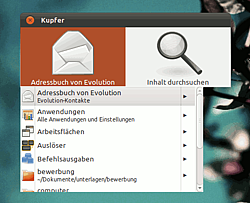
ist ein Anwendungsstarter ähnlich wie GNOME Do, der über weitaus mehr Funktionen verfügt als das bloße Aufrufen von Programmen. Der gesamte Funktionsumfang von Kupfer ist zu groß, um ihn hier komplett aufzuführen. Unter anderem lassen sich Programmdateien öffnen oder kopieren, Internetrecherchen durchführen, Wiedergabelisten von Rhythmbox bearbeiten, Kontakte von Evolution, Opera-Mail, Thunderbird, Pidgin oder Skype etc. durchsuchen, Tracker-Dateisuchen ausführen oder einfach Twitter-Tweets schreiben. 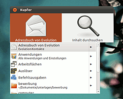
Kupfer ist in Python programmiert. Es ist auch unter anderen Desktop-Umgebungen wie Xfce oder LXDE einsetzbar. Kupfer befindet sich noch in aktiver Entwicklung und wird laufend verbessert. Erweiterungen sind einfach zu programmieren, was die große Zahl der bereits vorhandenen Erweiterungen erklärt. Ein Schwachpunkt von Kupfer ist die Optik: das Aussehen kann praktisch nicht angepasst werden.
Installation¶
Über die Paketquellen¶
Für die Nutzung des vollen Funktionsumfanges müssen folgende Pakete installiert werden [1]:
kupfer
python-wnck
python-gnomekeyring
python-appindicator
python-nautilus
python-cjson
python-gnome2
 mit apturl
mit apturl
Paketliste zum Kopieren:
sudo apt-get install kupfer python-wnck python-gnomekeyring python-appindicator python-nautilus python-cjson python-gnome2
sudo aptitude install kupfer python-wnck python-gnomekeyring python-appindicator python-nautilus python-cjson python-gnome2
Nach der Installation findet sich das Programm in "Anwendungen -> Zubehör -> Kupfer".
Paketquellen der Entwickler¶
Adresszeile zum Hinzufügen des PPAs:
ppa:kupfer-team/ppa
Hinweis!
Zusätzliche Fremdquellen können das System gefährden.
Ein PPA unterstützt nicht zwangsläufig alle Ubuntu-Versionen. Weitere Informationen sind der  PPA-Beschreibung des Eigentümers/Teams kupfer-team zu entnehmen.
PPA-Beschreibung des Eigentümers/Teams kupfer-team zu entnehmen.
Damit Pakete aus dem PPA genutzt werden können, müssen die Paketquellen neu eingelesen werden.
Aus dem Quellcode¶
Die Installation aus dem Quellcode ist einfach, allerdings wird man im Gegensatz zu einer Installation per PPA nicht mit Updates beliefert. Die Installation benötigt folgende Schritte:
Herunterladen der aktuellen Source-Datei von dieser Adresse
 (Der Dateiname lautet kupfer-VERSION.tar.gz).
(Der Dateiname lautet kupfer-VERSION.tar.gz).Entpacken[3] der Datei.
In einem Terminal[4] in das Verzeichnis der entpackten Dateien wechseln.
Die folgenden Befehle im Terminal eingeben:
./waf configure ./waf sudo ./waf install
Konfiguration¶
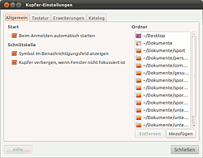
Nachdem man Kupfer gestartet hat (Kupfer trägt selbst sich den Autostart[5] ein), sollte man es als erstes seinen eigenen Bedürfnissen entsprechend anpassen. Die Konfiguration der Anwendung kann über zwei Wege geöffnet werden: Entweder man  -klickt auf das kleine Symbol in der Benachrichtigungsanzeige und wählt dann "Einstellungen", oder man betätigt den Kupfer-Hotkey
Strg +
und drückt dann die Tastenkombination
Strg +
⇧ +
,
-klickt auf das kleine Symbol in der Benachrichtigungsanzeige und wählt dann "Einstellungen", oder man betätigt den Kupfer-Hotkey
Strg +
und drückt dann die Tastenkombination
Strg +
⇧ +
,
Im Folgenden wird nur auf einige Besonderheiten in den Einstellungen eingegangen. Die meisten Einstellungen sind selbsterklärend oder können einfach ausprobiert werden.
Im Reiter "Allgemein" können auf der rechten Seite Ordner hinzugefügt werden, deren Dateien das Programm indizieren soll. Hierbei ist zu beachten, dass die Verzeichnisse nicht rekursiv indiziert werden. Das liegt darin begründet, dass Kupfer keine Desktopsuchmaschine ist und deshalb nicht mit mehreren tausend indizierten Dateien zurecht kommt. Daher sollte man wirklich nur die häufig genutzten Verzeichnisse hinzufügen.
Im Reiter "Tastatur" sollte man als Kupfer-Neuling zunächst keine Änderungen vornehmen.
Im Reiter "Erweiterungen" lassen sich verschiedene Zusatzmodule von Kupfer ein- oder ausschalten. Klickt man in der Liste auf eines der Module, erhält man auf der rechten Seite eine sehr kurze Info, wozu die Erweiterung gut ist. Es lohnt sich, die Liste einmal komplett durchzugehen, da sehr interessante Funktionen angeboten werden.
Im Reiter "Katalog" erhält man nochmal eine Übersicht darüber, welche Daten Kupfer heranzieht. Man sollte nur die Kataloge aktivieren, die man wirklich benötigt, um die Geschwindigkeit der Kupfer-Suche nicht zu beeinträchtigen.
Bedienung¶
Grundsätzlich funktioniert Kupfer wie viele andere Programmstarter (z.B. GNOME Do): Man öffnet das im Hintergrund laufende Programm mit dem Tastenkürzel Strg + , tippt den Befehl vollständig oder teilweise ein und bestätigt mit ⏎ , sobald der gewünschte Befehl angezeigt wird. Mit Tab ⇆ bewegt man den Fokus auf die rechte Hälfte, wo man eine andere Aktion für das Objekt auf der linken Seite auswählen kann.
Kupfer mit Erweiterungen ist sehr mächtig, was die Funktionalität angeht. Es seien hier deshalb nur einige Verwendungsbeispiele aufgeführt. Ausführlichere Tipps gibt es auf der Wiki-Seite von Kupfer .
| Gewünschte Aktion | Tastenkombination | Bildschirmfoto |
Das Programm OpenOffice Writer soll gestartet werden. | Strg + → writer → ⏎ | 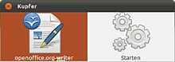 |
| Mit , können mehrere Befehl verknüpft werden. Z.B öffnet man so die Dateien bewerbung.odt und lebenslauf.odt gleichzeitig. | Strg + → bewerbung.odt → , → lebenslauf.odt → ⏎ | 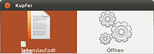 |
| Die Datei bewerbung.odt soll aus dem aktuellen Verzeichnis auf den Desktop kopiert werden | Strg + → bewerbung.odt → Tab ⇆ → ↓ → "Kopieren nach..." auswählen → Tab ⇆ → desktop → ⏎ | 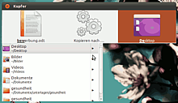 |
| Mit dem eingebauten Taschenrechner soll ausgerechnet werden, wie viele Wochen ein Jahr hat.(Dafür ist die Aktivierung der Erweiterung "Rechner" in den Kupfer Einstellungen notewendig) | Strg + → = → 365/7 → ⏎ | 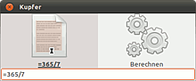 |
| Es soll nach dem gerade in einem Text markierten Wort in der Wikipedia gesucht werden. | Strg + Alt + → Tab ⇆ → In Wikipedia suchen → ⏎ | 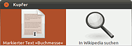 |
| Ein Terminal soll in dem Ordner Dokumente geöffnet werden | Strg + → Dokumente → Tab ⇆ → Hier ein Terminal öffnen → ⏎ | 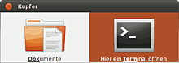 |
| Die zuletzt verwendeten Dokumente durchsuchen. | Strg + → zuletzt → ⏎ | 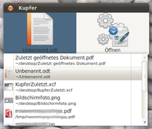 |
| Die letzten Einträge der Zwischenablagen durchsuchen. | Strg + → Zwischenablage → ⏎ | 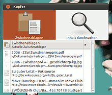 |
| Eine E-Mail an jemanden aus dem Evolution-Adressbuch senden. | Strg + → Adressbuch von Evolution → ↓ → "Adressbuch von Evolution" auswählen → → → gewünschten Kontakt auswählen → ⏎ | 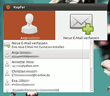 |
Alternativen¶
Im Folgenden einige Programmstarter, die ähnlich wie Kupfer funktionieren und ihre eigenen Vorzüge haben:
Docks und andere Anwendungsstarter
 Programmübersicht
Programmübersicht
Links¶
Manual
- Dokumentation
Kupfer - bei wiki.gnome.org
Rezension auf Webdomination
 - 05/2010
- 05/2010Rezension auf Macfidelity
- 05/2010Rezension auf OMGUbuntu
- 05/2010
- Erstellt mit Inyoka
-
 2004 – 2017 ubuntuusers.de • Einige Rechte vorbehalten
2004 – 2017 ubuntuusers.de • Einige Rechte vorbehalten
Lizenz • Kontakt • Datenschutz • Impressum • Serverstatus -
Serverhousing gespendet von